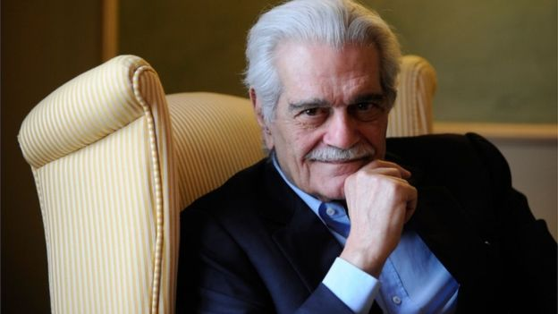

غير محرك غوغل للبحث شعاره في أكثر من أربعين دولة اليوم ليحمل رسما للممثل المصري العالمي عمر الشريف، احتفالا بمرور 86 عاما على ميلاده، الذي يحل في العاشر من إبريل/نيسان. وكان عمر الشريف أحد أشهر الممثلين المصريين بين أبناء جيله، وظهر في عدد من الأعمال العالمية مثل "لورانس العرب" والدكتور جيفاغو. جذبت وسامة الشريف الكثير من النساء حول العالم. لكنه اعتزل التمثيل ليكون نزيلا دائما في أكبر الملاهي وصالات القمار. والاسم الحقيقي لعمر الشريف هو ميشيل ديمتري شلهوب. ولد في مدينة الإسكندرية في العاشر من أبريل/نيسان عام 1932، لعائلة من أصول لبنانية. كان والده من تجار الخشب الأثرياء. وكانت والدته سيدة مجتمع، تستضيف أكبر الشخصيات في الدولة، من بينهم الملك فاروق. ودرس في مدرسة كلية فيكتوريا في الإسكندرية، وأظهر تفوقا دراسيا، خاصة في اللغات. ثم تخرج في جامعة القاهرة بدرجة بكالوريوس في الرياضيات والفيزياء، ثم انضم إلى إدارة أعمال الأسرة. لكن طموح الشريف الأكبر كان أن يصبح ممثلا، فاتجه إلى دراسة الفنون في الاكاديمية الملكية للدراما في لندن.
